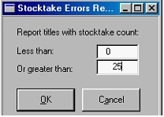

Error report
From the main menu, select Modules/ Stocktake/ Reports and then click on Errors. The will open the parameters window for the Errors report:

Set the parameters:
| · | Less than - this would usually be set to zero. This will find any titles where an incorrect adjustment was made to the count resulting in a negative stock count.
|
| · | Greater than - set this at something just above your usual stock holding. It doesn't matter if some genuine counts appear on the report. They can be ignored. We are looking for large discrepancies where a barcode was scanned into a quantity field, or say, 10 were entered as 100. The default is set to 500.
|
Unders report
From the main menu, select Modules/ Stocktake/ Reports and then click on Unders. In the report parameters window that opens, you can opt to include the approval and consignment figures to you count.
The report lists all items where fewer were found in the stocktake than there were meant to be.
Unders are largely theft but look for patterns which suggest counting errors. Was a shelf missed in the counting or was the bulk stock of a popular title not counted?
Overs report
From the main menu, select Modules/ Stocktake/ Reports and then click on Overs.
In the report parameters window that opens, you can opt to include the approval and consignment figures to you count.
This report lists all items where more stock was counted than there were meant to be.
Overs are largely due to receiving errors but look for patterns which suggest double counting of a shelf or area.
Also look for large overs that have corresponding unders, where say, a hard cover was counted as a soft cover etc.
After you have checked any major discrepancies, correct any counting errors in the Stocktake Entry window. Then reprint the Overs and Unders reports as a permanent record.
Other reports
There are other reports which can be run before or after stocktake.
From the main menu, select Modules/ Stocktake/ Reports. Then select the report you require.